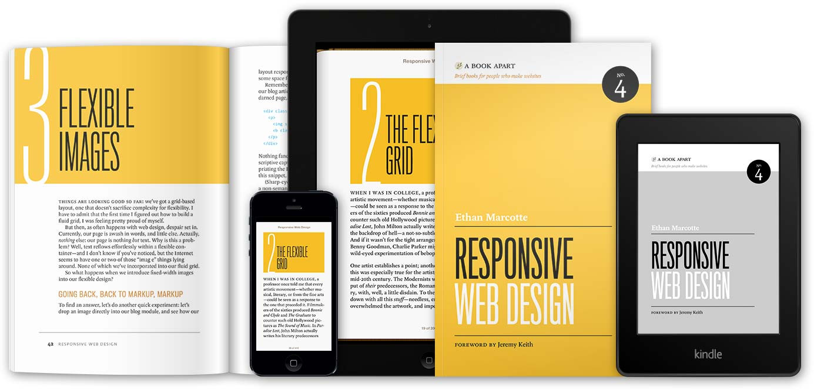

Developing MobileApp-Like Applications
More and more, mobile devices are becoming a staple of our everyday lives. We depend on them for email, phone, instant messaging, social network updates, entertainment, and even e-commerce. However, the number and variety of devices is also abundant, making life hard for mobile application designers and web developers alike. Does anyone really enjoy designing and maintaining the same website/application for three different platforms? The answer is no. Luckily, creating custom frameworks or applications for each device is not the only option we have. One convenient way of killing the proverbial two birds with a single stone, is to create websites that can imitate mobile applications when browsed in those environments.
Now, maybe you're thinking, "Wait, wait, wait... Applications and websites are completely different. You can't turn a web-site into an application, and typically only badly-designed applications look like a web site." But here at Mobile Fortress, we believe that a website should be formatted however provides the best experience for end-users, at the lowest development costs.
Application-Like Websites
As we already discussed, creating custom applications for each potential device can be tedious (not to mention, expensive). So instead, we leverage existing web technologies to be functionally equivalent to simple native applications. The code is written once, and displays nicely for everyone, regardless of OS. For mobile devices, we can even utilize some of their platform-specific functionality, such as touch/swipe navigation, Global Positioning System, or even their camera.
Building a Web Application
In order to create an attractive webapp experience for our end users, there's a few points of interest that we really need to address, including device-based capabilities, smooth transitions, and site composition.
Device-based capabilities
Today's mobile devices are significantly more elegant and sophisticated than the clunky web browsers of yesteryear. Devices typically have the ability to receive touch input, but don't have fully-functional keyboards. This requires us to reduce the gauntlet of text fields some web sites force users through before accessing their site, and replace them with touch-sensitive navigation, emulating the functionality of modern native applications.
Global Positioning Systems (GPS) are frequently available on mobile devices, allowing us to provide content or services specific to a user's location. Wouldn't it be awesome if your local pizza place's website had the ability to guide you directly to their store? Yes. Yes it would.
Mobile developers have found a number of novel ways to utilize the video/still-image functionality of modern devices, from measuring your pulse to displaying "enhanced reality" images overlaying the live camera feed. For a store, you might allow customers to scan a bar-code to price-check an item prior to purchasing, and allow them access to exclusive coupons by using your site.
Padilicious.com
Smooth Transitions
Most people's journey through the vast World Wide Web is actually a series of abrupt bumps from one page to another. Click a hyperlink, and flash! everything changes, and the website rebuilds. On slow-bandwidth devices, this journey also includes long waits, as content is laboriously carted from the Internet onto their device. Again, these can distract and dissuade users from consuming valuable content. App-like websites seek to reduce these distractions through the use of GPU-accelerated transitions, dynamic content loading, and optimizing to device abilities.
GPU-acceleration is quickly becoming a standard on mobile devices, and web-pages can take advantage of this technology to reduce the stop-gap feel prevalent in today's websites. For example, the following CSS code allows devices to enable their GPU to smoothly render certain JavaScript animations and transitions:
<!-- Forces the site to display within the reported -->
<!-- confinces of the window (initially) -->
<meta name="viewport" content="width=device-width, initial-scale=1" />
Instead of following the traditional HTML approach of "jumping" between views, we can smoothly transition the user's view, giving them a better mental model of the virtual world you are trying to construct. Combined with a good touch interface, users will find your site significantly more intuitive and navigable.
UrbanInsite: GPU Accelerated CSS TransitionsDynamic Optimized Content Loading
Say your friend, Fred, owns a photography business. He uses his website to display some beautiful photographs taken by his agency. Full-blown photographs could take minutes to load on a slow connection, and they are not likely to be appreciated on a small, mobile device. In order to decrease load times, the website keeps multiple versions of the photograph, and dynamically determines which to serve based on the client's needs: a small photo is served to mobile clients, a larger version is given to desktop (high-bandwidth / large display) clients, and the full-blown image is given to any user who specifically asks for it. This cuts down on the time it takes to load pages, delivering a much faster and smoother experience to the end-user.
Dynamic composition
The final area of App-like website development I want to emphasize is dynamic composing, otherwise known as Responsive Web Design (RWD). RWD technologies essentially allow the site's content to dynamically resize and reposition itself to match the client's requirements. This means that you can create one website for all of your clients, with much less overhead than creating device-specific templates. RWD removes the need to zoom in and out of websites (a very un-app-like quality). Furthermore, content is spaced to fill (but not overrun) the screen.